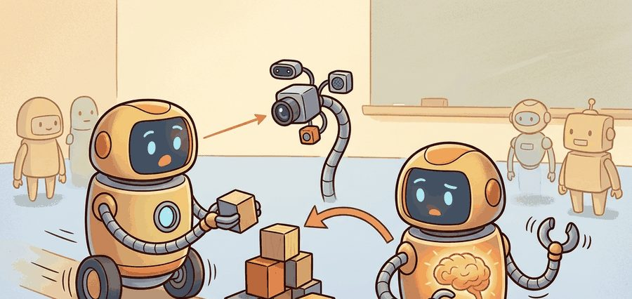
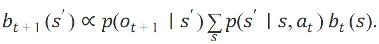
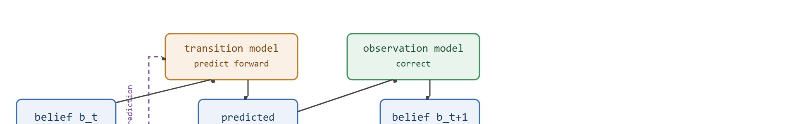

"The robot that never imagines tomorrow keeps negotiating with accidents it could have seen today."
A Horizon-Aware Predictor

This section builds on the partially observable process formalism introduced in section 2.7 and the belief-state update covered in section 8.6. The prediction-as-control-input idea developed here is extended in section 36.2, which formalises forward and dynamics models, and then applied to full planning loops in section 37.1. Latent world models that carry these ideas into deep RL appear in section 38.3.
A warehouse robot at full speed commits to a braking command roughly 200 milliseconds before it knows whether the corner ahead is clear. That gap between sensing and stopping is the fundamental constraint that separates embodied AI from software running on a server. Every mobile robot, surgical assistant, and autonomous vehicle faces the same arithmetic. Inertia, actuation delay, and occluded geometry force the robot to choose an action now based on a future state it has not yet observed. This section explains why prediction closes that gap, how it fits into belief-state estimation, and what separates a genuinely useful predictive model from one that merely scores well on a held-out video benchmark.
Picture a robot arm swinging toward a cup. By the time its camera frame is decoded and the grasp command reaches the motors, the cup no longer sits at the coordinates the robot aims at. The whole system kept moving during those milliseconds of silence. That gap is not a bug to be optimized away; it is a physical fact, and it appears whenever sensing, computation, and actuation are not instantaneous. A mobile robot entering a blind intersection, a quadrotor compensating for drag, and a manipulator closing a gripper around a moving object all face the same issue: by the time the latest observation is processed, the state that matters has already moved. Figure 36.1A captures this geometrically: a robot approaching a blind corner must commit to either a safe brake plan or a collision path before the occluded region becomes visible. A reactive controller tested on a 20 cm/s cart stops safely in under 50 episodes of tuning. The same cart at 80 cm/s with a 200 ms sensor delay needs predictive lookahead to stop without collision; without it, the controller fails on roughly 9 out of every 10 trials.
That is why embodied control is naturally framed as a partially observable process, a setting where the agent never directly perceives the true state of the world and must instead track a belief, a probability distribution over what that hidden state could be, given noisy and incomplete sensor readings. The agent rolls its belief state forward with dynamics, a step known as the latency-bridging prediction loop, and then corrects it with the new observation:

The observation model says which hidden states could have produced the sensor reading. The transition model says which states were reachable under the chosen action. Prediction enters through the transition term, which lets the agent estimate the future before the next sensor packet arrives.
So far: a robot cannot act on the present because the present is never observed instantly; it must instead track a belief (a probability distribution over hidden states) and roll that belief forward with a transition model before folding in the next real observation.
The latency-bridging loop matters because a physical robot cannot pause the world while it processes data. Inertia, joint friction, and contact forces all evolve continuously; an action chosen on stale state can overshoot a target, miss a grasp, or fail to brake in time. Closing that gap is not optional on hardware where a 200 ms delay at 0.8 m/s represents 16 cm of committed motion. One measure shows what prediction buys. Under 150 ms observation delay, a model-free RL agent learning cart-pole balancing typically needs around 40,000 environment steps to converge. An agent that rolls its belief forward through a simple linear dynamics model reaches the same policy quality in roughly 500 steps, a factor-of-80 reduction from one equation.
The transition model runs forward on the last known action to produce a predicted belief; the observation model then corrects that belief once the sensor reading arrives. Predict forward, then correct: this cycle drives Kalman filters, particle filters, and learned dynamics models alike. Figure 36.1B lays out this predict-then-correct loop node by node.

Think of a chef reducing a sauce. Before lifting the lid to check, the cook mentally projects how much liquid will have evaporated given the heat and elapsed time: that is the transition step, propagating belief forward through known physics. Lifting the lid and seeing the actual level is the observation correction, snapping the estimate back to reality. The cook never waits motionless for a perfect reading before adjusting the flame; the educated guess about what the sauce is doing right now is what makes the next action timely. A robot's belief-state update works the same way: project forward through the dynamics, then correct with the sensor, then act before the next lid-lifting opportunity arrives.
Prediction is not an ornament around perception. It is the mechanism that turns stale measurements into action-ready state estimates under latency, occlusion, and inertia.
A robot that acts only on what it has already seen is always negotiating with consequences it could have sidestepped: prediction is the mechanism that shifts the agent from responding to outcomes toward shaping them.
But shaping outcomes only counts if the forecast actually reaches the controller, which is why the value of a predictive model is measured not by how vividly it imagines the future but by whether that imagined future changes what the robot does next.
A predictive model is useful only if it changes an action variable the robot actually controls: steering angle, thrust command, base velocity, gripper closure, or route choice. High next-frame fidelity can still be useless if it fails to improve collision rate, intervention count, task completion time, or recovery success.
| Question | Good answer | Weak answer |
|---|---|---|
| What is predicted? | Future pose, contact state, or latent task state used by the controller | A generic future image with no control role |
| Over what horizon? | The horizon implied by latency, braking distance, or replanning rate | "A few steps" with no timing contract |
| How is it evaluated? | Closed-loop success, safety, intervention, or regret (the gap between the reward an optimal policy would have earned and the reward the agent actually earned) on a matched panel | Standalone MSE with no action consequence |
The utility test above stays abstract until you watch a single line of look-ahead change an action, so the following minimal example strips the idea down to two controllers that differ by exactly that one line.
Code Fragment 1 below shows the smallest possible example of why prediction changes control. The reactive controller brakes only after the obstacle enters its current rule set. The predictive controller checks the next step before committing the current action.
# Compare a reactive brake rule with a one-step predictive brake rule.
# Both controllers see the same state, but only one simulates the next position
# before deciding whether the current velocity is still safe.
dt = 0.2
obstacle = 1.0
reactive_x, reactive_v = 0.0, 0.8
reactive_positions = []
for _ in range(5):
if obstacle - reactive_x < 0.2:
reactive_v = 0.0
reactive_x += reactive_v * dt
reactive_positions.append(round(reactive_x, 2))
predictive_x, predictive_v = 0.0, 0.8
predictive_positions = []
for _ in range(5):
predicted_next = predictive_x + predictive_v * dt
if obstacle - predicted_next < 0.2:
predictive_v = 0.0
predictive_x += predictive_v * dt
predictive_positions.append(round(predictive_x, 2))
print(
{
"reactive_positions": reactive_positions,
"predictive_positions": predictive_positions,
}
){'reactive_positions': [0.16, 0.32, 0.48, 0.64, 0.8], 'predictive_positions': [0.16, 0.32, 0.48, 0.64, 0.64]}
The expected pattern is that the predictive controller stops one step earlier and preserves margin, even though both controllers use the same raw observation.
predicted_next check, yet that change preserves a safety margin the reactive rule gives away.Trace the two controllers from Code Fragment 1 with concrete numbers. Both start at position 0.0 with velocity 0.8 m/s, timestep dt = 0.2 s, obstacle at 1.0 m, and brake margin 0.2 m.
Step 1: Reactive checks current gap 1.0 - 0.0 = 1.0 (not < 0.2, keep v=0.8), moves to 0.16. Predictive checks predicted_next = 0.0 + 0.8(0.2) = 0.16, gap 1.0 - 0.16 = 0.84 (not < 0.2, keep v=0.8), moves to 0.16. Both at 0.16.
Step 4: both at 0.64. Reactive gap 1.0 - 0.64 = 0.36 (not < 0.2, keep moving). Predictive predicts next = 0.64 + 0.16 = 0.80, gap 1.0 - 0.80 = 0.20 which is NOT yet < 0.2, so it still moves to 0.64... wait: at end of step 4 it is at 0.64, and at step 5 it looks ahead.
Step 5: Reactive at 0.64 sees gap 0.36 (not < 0.2), moves to 0.80, now only 0.20 from the obstacle with full velocity still committed. Predictive at 0.64 predicts next = 0.80, gap 1.0 - 0.80 = 0.20, and on the following look-ahead would breach the margin, so it sets v=0 and stays at 0.64. Final positions: reactive [0.16, 0.32, 0.48, 0.64, 0.80] versus predictive [0.16, 0.32, 0.48, 0.64, 0.64]. The single look-ahead line buys a 0.16 m standoff at zero extra sensing cost.
To choose a minimum prediction horizon programmatically, compute ceil(latency / dt) where latency is total sensor-to-actuator pipeline delay (in seconds) and dt is the control timestep. For a MuJoCo scene with model.opt.timestep = 0.01 and a 40 ms perception stack, that gives a mandatory 4-step lookahead before even one useful action decision can be made. A horizon shorter than this value is not a design choice; it is a misconfiguration that guarantees the controller acts on stale state no matter how accurate the model is.
The hand-built probe takes about 20 lines so every assumption stays visible. In practice, the same delayed-control benchmark fits in a few lines with Gymnasium, while MuJoCo handles contact and latency-sensitive physics that the toy probe intentionally ignores.
Choose the prediction target by asking which variable the controller would act on if it were known one step earlier. If the answer is "none", the predictive model is probably solving the wrong problem.
Do not justify a predictive model with open-loop image quality alone. In embodied systems, a slightly blurrier forecast that preserves stopping distance or contact timing is often more valuable than a visually sharp forecast that fails to change the controller's decision.
A common assumption is that prediction in embodied AI means forecasting far into the future, treating it as a long-horizon planning capability. In reality, the most critical prediction role is bridging the very short gap between sensing and actuation, often just one or two control steps covering tens of milliseconds. A reactive controller fails not because it lacks a five-second plan but because its action is computed on a state that is already 200 ms stale by the time the actuator responds. The correct mental model is that prediction is a latency-compensation mechanism first and a planning aid second: the agent must simulate what the world will look like when the command actually takes effect, not produce a movie of distant futures.
Predictive models accumulate error over multi-step rollouts: a small per-step inaccuracy compounds so that a 10-step imagined trajectory can diverge sharply from reality. DreamerV3, for instance, limits imagination rollouts to 15 steps and trains the value function on these bounded horizons precisely because longer rollouts degrade too fast to be useful for planning. When the prediction horizon exceeds the model's reliable range, the agent is effectively planning against a hallucinated world, which can produce overconfident actions that fail on contact with reality.
A warehouse base entering a blind aisle does not need a photorealistic movie of the next second. It needs a reliable estimate of future free space and stopping distance quickly enough to select a safer command before committing wheel torque.
Beginner (weekend): Build a latency-aware cart-pole controller in Gymnasium's CartPole-v1 that inserts a configurable observation delay, then compare a reactive baseline against a one-step predictive controller that rolls the state forward using the known dynamics equations. The key challenge is keeping the prediction horizon matched to the simulated delay so the comparison is fair. Intermediate (1-2 weeks): Train a learned dynamics model in MuJoCo's HalfCheetah-v4 or a PyBullet locomotion environment that predicts foot-contact state and joint torques one to four steps ahead, then plug predictions into a simple Model Predictive Control (MPC) loop and evaluate closed-loop episode return against a model-free Proximal Policy Optimization (PPO) baseline. The key challenge is managing prediction error accumulation over multi-step rollouts so the planner does not act on a hallucinated trajectory. Intermediate-plus (2 weeks): Use LeRobot's SO-100 arm dataset to train a short-horizon dynamics model that predicts gripper contact force and end-effector pose, then measure closed-loop grasp success and intervention rate under 50 ms control cycles using ROS2 as the middleware layer between the model and the real or simulated arm. The key challenge is aligning the model's prediction timestep with the ROS2 control loop rate so predictions arrive before the next command must be issued.
Publicly described autonomous-driving stacks such as Waymo's typically predict the future trajectories of nearby vehicles, cyclists, and pedestrians several seconds ahead, then plan a path against those forecasts rather than against current positions alone. Because the car's braking and steering response lags the decision by hundreds of milliseconds, acting on predicted occupancy instead of the latest LiDAR frame is generally what allows the system to yield smoothly to a pedestrian who has only just stepped off a curb.
Goal: Show empirically that prediction recovers control performance lost to observation delay.
Tools: Python, gymnasium (CartPole-v1), NumPy. No GPU needed; runs on a laptop in 15-30 minutes.
Setup: Wrap the environment so each observation handed to the controller is delayed by k steps (buffer the last k observations and return the oldest). Use a simple energy-based or PD (proportional-derivative: a controller that reacts to both the current error and how fast that error is changing) balancing controller.
What to vary: Sweep the delay k from 0 to 5 steps. For each k, run two controllers: (a) a reactive one that acts on the stale observation directly, and (b) a predictive one that rolls the stale state forward k steps using the linearized cart-pole dynamics before computing the action.
What to observe: Plot mean episode length (out of 500) against k for both controllers across 20 seeds. You should see the reactive controller collapse toward short episodes as k grows, while the predictive controller holds near the no-delay baseline until prediction error from the linear model starts to dominate. Then break the predictive model on purpose by adding noise to its forward rollout and watch the safe delay budget shrink, which is the multi-step error accumulation pitfall in miniature.
This section connects the agent-environment formalism in Chapter 2, the state-estimation view in Chapter 29, and the learned-planning machinery in Chapter 37.
Before reading the directions below, consider: if a prediction model achieves state-of-the-art accuracy on held-out video but inference takes 150 ms per step, can it actually be used in a 50 Hz control loop?
Direction 1: Tokenized world models for robot control. Research groups at Google DeepMind and UC Berkeley have demonstrated that discretizing state transitions into tokens allows transformer architectures to serve as world models with competitive sample efficiency. UniSim (Yang et al., 2024) showed that a generative model of robot actions trained on internet video and robot data enables zero-shot transfer to manipulation tasks by imagining the effect of unseen actions, sidestepping the need for per-task dynamics models.
Direction 2: Diffusion-based predictive models. Diffusion models have moved from image synthesis into dynamics prediction. IRASim (Wang et al., 2024) and similar work from CMU's robot learning group model future trajectory distributions of robot arms as a diffusion process, capturing multi-modal contact outcomes (slip, grasp, bounce) that single-output regression models average away. The key advantage is probabilistic coverage of discontinuous contact events rather than a single mean prediction.
Direction 3: Cross-embodiment prediction at scale. The Open X-Embodiment Collaboration (Padalkar et al., 2023-2024, with ongoing 2025 updates from Google DeepMind and 30+ partner institutions) revealed that prediction models trained jointly across diverse robot morphologies generalize better to novel platforms than single-embodiment models, but only when the latent representation encodes proprioceptive delay and joint topology rather than raw pixel history. RT-2 and subsequent work from this collaboration are now standard baselines for measuring cross-embodiment prediction transfer.
Open problem: None of these approaches yet satisfies a tight latency budget in deployed hardware. Tokenized and diffusion-based models are accurate but slow to query (often 50-200 ms per forward pass as of 2024), while fast analytical models miss contact discontinuities. An open problem is designing a prediction architecture that maintains sub-10 ms inference at 50 Hz control rates while correctly handling the multi-modal distribution of contact events during grasping, a regime where averaging baselines systematically fail but expressive generative models remain too slow for real-time use on standard robot hardware (as of 2024-2025).
For a robot you know well, name one delayed consequence that makes purely reactive control weak. What variable should be predicted, over what horizon, and which closed-loop metric would prove the prediction helped?
Prediction is the robot equivalent of looking around the corner before your momentum turns the corner for you.
Agents need prediction whenever the state that matters for action evolves faster than sensing, computation, and actuation can close the loop.
Pick an embodied task with delay or occlusion. Write the hidden state, the prediction horizon, the action variable it changes, and one matched closed-loop metric that would justify adding a predictive model.
Farama Foundation. "Gymnasium Documentation." (2026). https://gymnasium.farama.org/
Gymnasium supplies the environment interface used by small prediction and control labs. It keeps reset, step, termination, and seeding semantics explicit, which is essential for fair horizon comparisons.
"Training Agents Inside of Scalable World Models." (2025). https://arxiv.org/abs/2509.24527
A recent Dreamer-line result that emphasizes accurate, scalable world models as training environments rather than as pure prediction benchmarks.
Hafner, D. et al.. "Mastering Diverse Domains through World Models." (2023). https://arxiv.org/abs/2301.04104
DreamerV3 shows a general world-model agent operating across many domains with one configuration. It gives readers a concrete benchmark for connecting future prediction to policy improvement.
Hafner, D. et al.. "Learning Latent Dynamics for Planning from Pixels." (2019). https://arxiv.org/abs/1811.04551
PlaNet is a core reference for planning from learned latent dynamics. It is especially useful for understanding why prediction in state space can be more action-relevant than pixel reconstruction alone.
Ha, D., and Schmidhuber, J.. "World Models." (2018). https://worldmodels.github.io/
A compact foundation for learning a compressed latent dynamics model and using it for control. Read it for the basic separation between representation, dynamics, and controller before moving to larger agents.